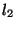
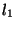
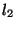
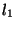

Next: 11.2 Adding other classes
Up: 11. Extending the tool
Previous: 11. Extending the tool
Contents
11.1 Adding simple shell-command tools
If the tool is implemented as a ``typical'' shell command, then all
that needs to be done is a single call of:
Tools.registerStdShellCmdTool
For example, suppose you have made a
new, improved version of ML-Yacc (``New-ML-Yacc'') and want to
register it under a class called nmlyacc. Here is what you
write:
val _ = Tools.registerStdShellCmdTool
{ tool = "New-ML-Yacc",
class = "nmlyacc",
suffixes = ["ngrm", "ny"],
cmdStdPath = "new-ml-yacc",
template = NONE,
extensionStyle =
Tools.EXTEND [("sig", SOME "sml", fn _ => NONE),
("sml", SOME "sml", fn x => x)],
dflopts = [] }
This code can be packaged as a CM library and loaded via CM.make
or CM.load_plugin. ( CM.autoload is not enough because of
its lazy nature which prevents the required side-effects to occur.)
Alternatively, the code could also be entered at the interactive top
level after loading library $smlnj/cm/tools.cm.
In our example, the shell command name for our tool is
new-ml-yacc. When looking for this command in the filesystem, CM
first tries to treat it as a path anchor (see
section 3.3). For example, suppose new-ml-yacc is
mapped to /bin. In this case the command to be
invoked would be /bin/new-ml-yacc. If path anchor resolution
fails, then the command name will be used as-is. Normally this
causes the shell's path search mechanism to be used as a fallback.
Tools.registerStdShellCmdTool creates the class and installs the
tool for it. The arguments must be specified as follows:
- tool
- a descriptive name of the tool (used in error messages);
type: string
- class
- the name of the class; the string must not contain
upper-case letters; type: string
- suffixes
- a list of file name suffixes that let CM automatically
recognize files of the class; type: string list
- cmdStdPath
- the command string from above; type: string
- template
- an optional string that describes how the command line
is to be constructed from pieces;
The string is taken verbatim except for embedded % format specifiers:
- %c
- the command name (i.e., the elaboration of cmdStdPath)
- %s
- the source file name in native pathname syntax
- %
 t
t
- the -th target file in native pathname syntax;
( is specified as a decimal number, counting starts at , and
each target file name is constructed from the corresponding
extensionStyle entry; if is  (or missing), then all
targets--separated by single spaces--are inserted;
if is not in the range between and the number of available
targets, then %t expands into itself)
(or missing), then all
targets--separated by single spaces--are inserted;
if is not in the range between and the number of available
targets, then %t expands into itself)
- %o
- the -th tool parameter;
(named sub-option parameters are ignored;
is specified as a decimal number, counting starts at ;
if is (or missing), then all options--separated by single
spaces--are inserted;
if is not in the range between and the number of available
options, then %o expands into itself)
- %
- the character (where is neither c, nor
s, t, or o)
If no template string is given, then it defaults to "%c %s".
- extensionStyle
- a specification of how the names of files
generated by the tool relate to the name of the tool input file;
type: Tools.extensionStyle.
Currently, there are two possible cases:
- `` Tools.EXTEND
 '' says that if the tool source file is
file then for each suffix sfx in (map #1 ) there
will be one tool output file named file . sfx. The
list consists of triplets where the first component specifies the
suffix string, the second component optionally specifies the
member class name of the corresponding derived file, and the
third component is a function to calculate tool options for the
target from those of the source. (Argument and result type of these
functions is Tools.toolopts option.)
'' says that if the tool source file is
file then for each suffix sfx in (map #1 ) there
will be one tool output file named file . sfx. The
list consists of triplets where the first component specifies the
suffix string, the second component optionally specifies the
member class name of the corresponding derived file, and the
third component is a function to calculate tool options for the
target from those of the source. (Argument and result type of these
functions is Tools.toolopts option.)
- `` Tools.REPLACE
 '' says that given the
base name base there will be one tool output file base
. sfx for each suffix sfx in (map #1 ). Here,
base is determined by the following rule: If the name of the
tool input file has a suffix that occurs in , then base is
the name without that suffix. Otherwise the whole file name is taken
as base (just like in the case of Tools.EXTEND). As with
Tools.EXTEND, the second components of the elements of can
optionally specify the member class name of the corresponding derived
file, and the third component maps source options to target options.
'' says that given the
base name base there will be one tool output file base
. sfx for each suffix sfx in (map #1 ). Here,
base is determined by the following rule: If the name of the
tool input file has a suffix that occurs in , then base is
the name without that suffix. Otherwise the whole file name is taken
as base (just like in the case of Tools.EXTEND). As with
Tools.EXTEND, the second components of the elements of can
optionally specify the member class name of the corresponding derived
file, and the third component maps source options to target options.
- dflopts
- a list of tool options which is used for
substituting %o fields in template (see above) if no
options were specified. (Note that the value of dflopts is never
passed to the option mappers in Tools.EXTEND or
Tools. REPLACE.) Type: Tools.toolopts.
Examples for the EXTEND expansion style are tools such as
ML-Yacc and ML-Lex, while others, e.g., ML-Burg, use the REPLACE
style (see section 6.2).
Next: 11.2 Adding other classes
Up: 11. Extending the tool
Previous: 11. Extending the tool
Contents
Matthias Blume
2001-07-19